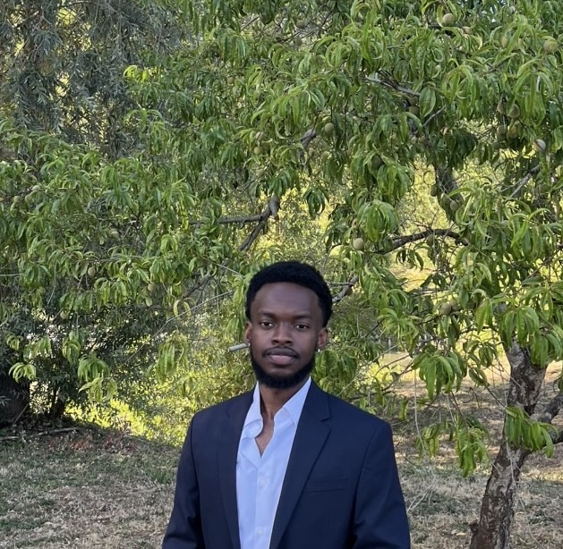

Manuel Nkegoum
Few-shot multispectral object detection · Computer Vision
Université Bretagne-Sud (IRISA) / ATERMES
About
I am a PhD student working on few-shot multispectral object detection, based between IRISA / Université Bretagne-Sud and ATERMES. My research focuses on deep neural architectures that fuse visible and thermal (RGB/IR) imagery under tight annotation budgets — a critical capability for autonomous driving, surveillance, and multi-sensor robotics.
Computer Vision
Few-Shot Learning
Multispectral Fusion (RGB/IR)
Vision-Language Models
Deep Learning
- 🧠Passionate about advancing Machine Learning and Deep Learning architectures to solve real-world computer vision challenges.
- ⚽Avid soccer enthusiast; played as a defensive & central midfielder on my university team.
- 🔬Dedicated to exploring data-efficient learning, domain adaptation, and multi-modal alignment.
- 🤝Open to research collaborations, academic exchanges, and discussions around AI breakthroughs.
News
- [08/2026]FSMODNet accepted for publication in Image and Vision Computing (IVC) 🥳
- [12/2025]Preprint released: "From Words to Wavelengths" — accepted to BMVC 2026 🥳
- [11/2024]Started PhD research at Université Bretagne-Sud in collaboration with ATERMES.
- [04/2024]Joined Orange as an AI Research Scientist Intern, working on speech understanding for dialog systems.
Education
Université Bretagne-Sud
Nov 2024 – PresentPh.D. in Artificial Intelligence & Computer Vision
Institut Polytechnique de Paris
Sep 2023 – Dec 2024M.S. in Data Sciences
- Computer vision (CNNs, Transformers, contrastive learning, domain adaptation)
- MCMC & generative modeling (VAEs, normalizing flows, diffusion models)
- NLP architectures (Transformers, seq2seq, LLM fine-tuning)
Universidade da Coruña
Sep 2022 – Jun 2023M.S. in High Performance Computing (HPC)
- Parallel programming paradigms (OpenMP, MPI, CUDA)
- HPC infrastructure optimization & profiling (Intel Advisor, OneAPI)
CyTech (ex-EISTI)
Sep 2020 – Jun 2023Engineering Degree in Applied Mathematics
- Reinforcement learning, optimization, and graph theory
- Applied probability and mathematical statistics
Publications

From Words to Wavelengths: VLMs for Few-Shot Multispectral Object Detection
British Machine Vision Conference (BMVC), 2026
Adapts open-vocabulary models (Grounding DINO & YOLO-World) to fuse RGB and thermal modalities. Demonstrates that vision-language priors transfer effectively to unseen spectral domains and outperform specialized detectors in few-shot regimes.
@inproceedings{nkegoum2026words,
title={From Words to Wavelengths: VLMs for Few-Shot Multispectral Object Detection},
author={Nkegoum, Manuel and Pham, Minh-Tan and Fromont, {\'E}lisa and Avignon, Bruno and Lef{\`e}vre, S{\'e}bastien},
booktitle={British Machine Vision Conference (BMVC)},
year={2026}
}

FSMODNet: A Closer Look at Few-Shot Detection in Multispectral Data
Image and Vision Computing (IVC), 2026
Introduces a fusion architecture combining neighborhood attention and cross-deformable attention with prototype aggregation for few-shot detection across visible and thermal modalities.
@article{nkegoum2026fsmodnet,
title={FSMODNet: A Closer Look at Few-Shot Detection in Multispectral Data},
author={Nkegoum, Manuel and Pham, Minh-Tan and Fromont, {\'E}lisa and Avignon, Bruno and Lef{\`e}vre, S{\'e}bastien},
journal={Image and Vision Computing},
year={2026}
}
Professional Experience
ATERMES
Nov 2024 – PresentPhD Researcher — Few-Shot Multispectral Object Detection
- Developing deep learning architectures for object detection with limited labeled data
- Focusing on multi-sensor fusion (RGB + Long-Wave Infrared / Thermal)
Orange
Apr 2024 – Sep 2024AI Research Scientist Intern
- Evaluated state-of-the-art neural speech understanding models (Wav2Vec2, T5, Whisper)
- Designed speech-to-intent methods for multi-turn dialogue state tracking
- Constructed experimental protocols measuring cross-dataset generalization
VINCI
Jan 2023 – Apr 2023Computer Vision Capstone Project
- Engineered a deep template-matching framework (QATM) to automate symbol counting in architectural blueprints
TotalEnergies OneTech
May 2022 – Sep 2023AI Developer, Computer Vision
- Automated microfossil segmentation and classification using SAM and Fourier transforms
- Developed AI model ("PirateFlame") for industrial greenhouse-gas flare characterization (CatBoost, U-Net)
- Built multi-modal image registration pipelines for petrography analysis (SimpleITK, SIFT/ORB)
Academic Services & Teaching
Reviewer
ConferencesECCV 2026, NeurIPS 2026
JournalsIEEE JSTARS
Teaching Assistant
Winter 2026Deep Learning for Computer Vision
Spring 2026Databases & Information Systems